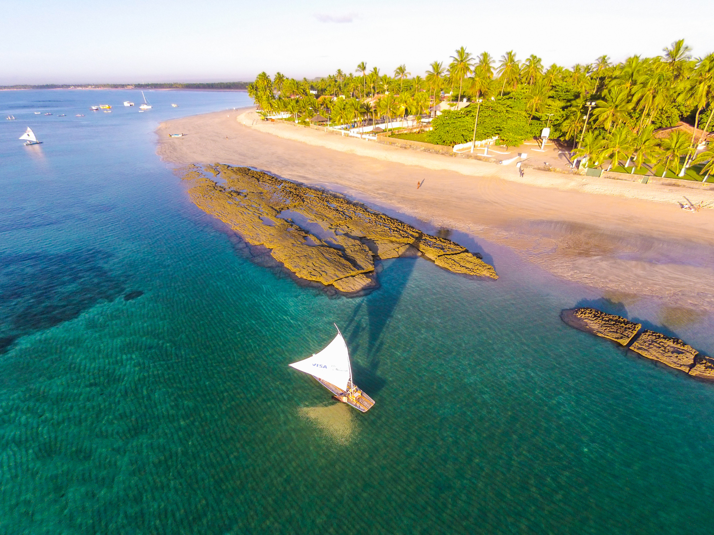
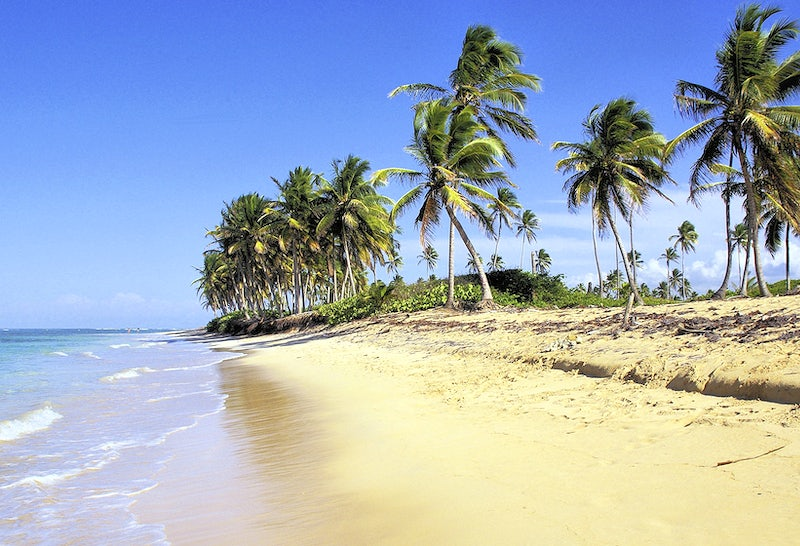

@@include('header.htm')

@@include('blocks/navigation.htm')

<!--============================
=            Banner            =
=============================-->

<section class="banner-carrosel">
	<div id="owl-demo" class="owl-demo owl-carousel owl-theme">
		<div class="item"></div>
		<div class="item"></div>
		<div class="item"></div>
		<div class="item"></div>
	</div>
</section>

@@include('blocks/speakers.htm')

@@include('blocks/sponsors.htm',{
"background" : true
})

@@include('blocks/google-map.htm')

@@include('blocks/footer.htm')

@@include('footer.htm')